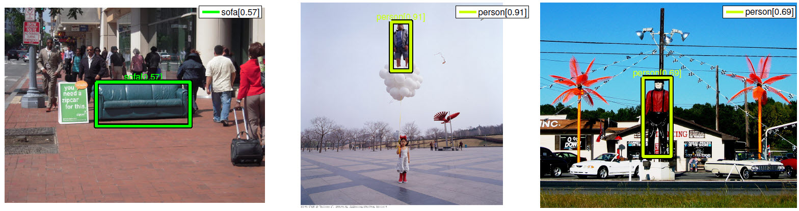
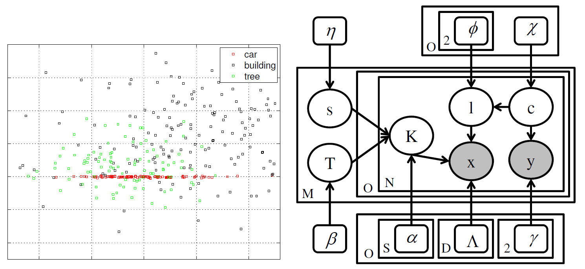
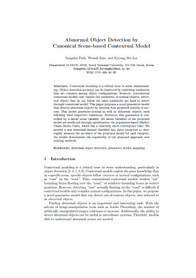
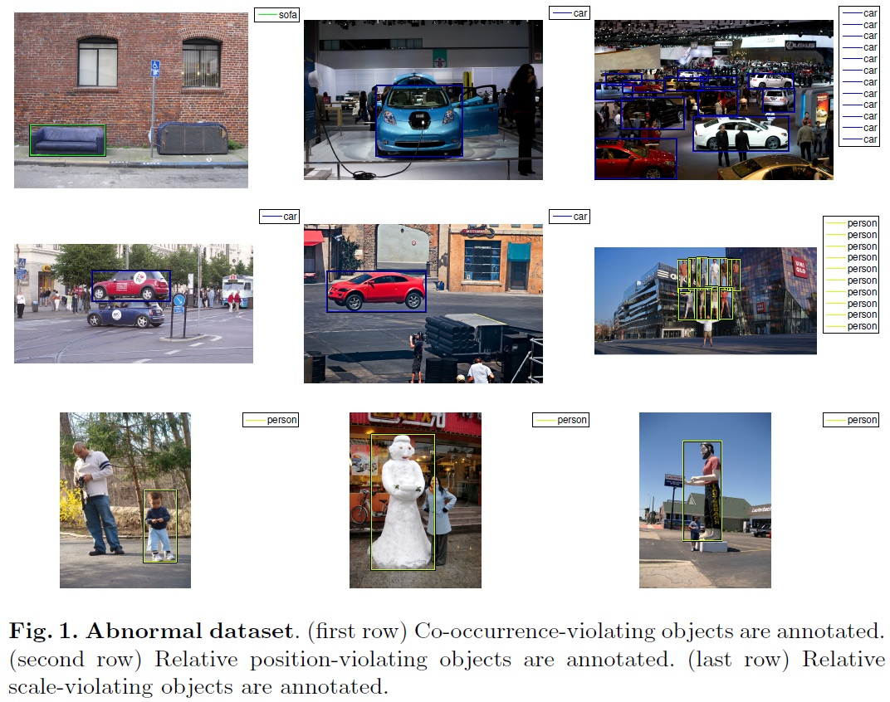
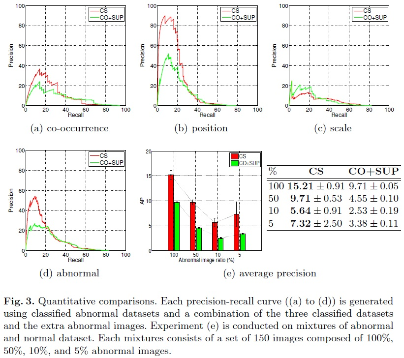
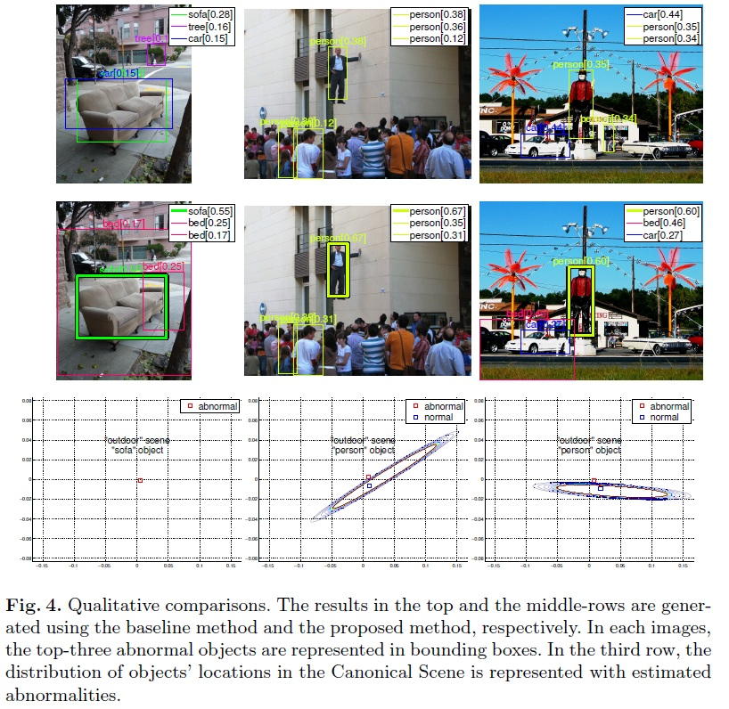
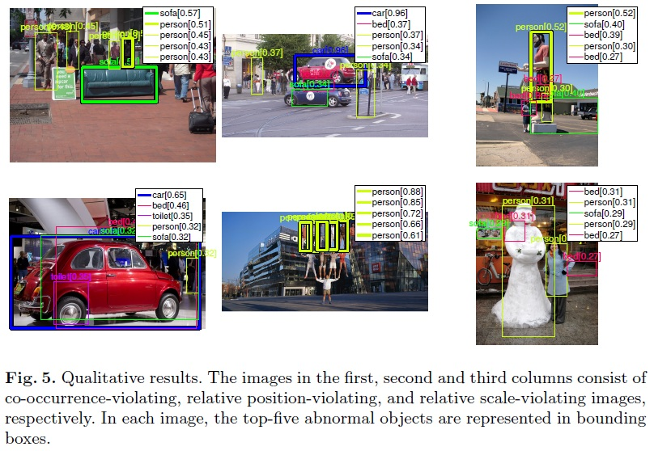

Abnormal Object Detection
by Canonical Scene-based Contextual Model
 |
 |
Authors
Sangdon Park
Wonsik Kim
Kyoung Mu Lee
Abstract
Contextual modeling is a critical issue in scene understanding. Object detection accuracy can be improved by exploiting tendencies that are common among object con gurations. However, conventional contextual models only exploit the tendencies of normal objects; abnormal objects that do not follow the same tendencies are hard to detect through contextual model. This paper proposes a novel generative model that detects abnormal objects by meeting four proposed criteria of success. This model generates normal as well as abnormal objects, each following their respective tendencies. Moreover, this generation is controlled by a latent scene variable. All latent variables of the proposed model are predicted through optimization via population-based Markov Chain Monte Carlo, which has a relatively short convergence time. We present a new abnormal dataset classi ed into three categories to thoroughly measure the accuracy of the proposed model for each category; the results demonstrate the superiority of our proposed approach over existing methods.
Publications

Paper
ECCV 2012 paper
ECCV 2012 suppl.
Presentation
Code
matlab code (zip, 19.4 MB)
Dataset
abnormal dataset (zip, 49.3MB)
Citation
Sangdon Park, Wonsik Kim and Kyoung Mu Lee, "Abnormal Object Detection by Canonical Scene-based Contextual Model," Proc. of European Conference on Computer Vision (ECCV), 2012. Bibtex
Evaluation
Abnormal dataset

Quantitative comparison

Qualitative comparison

Qualitative results
